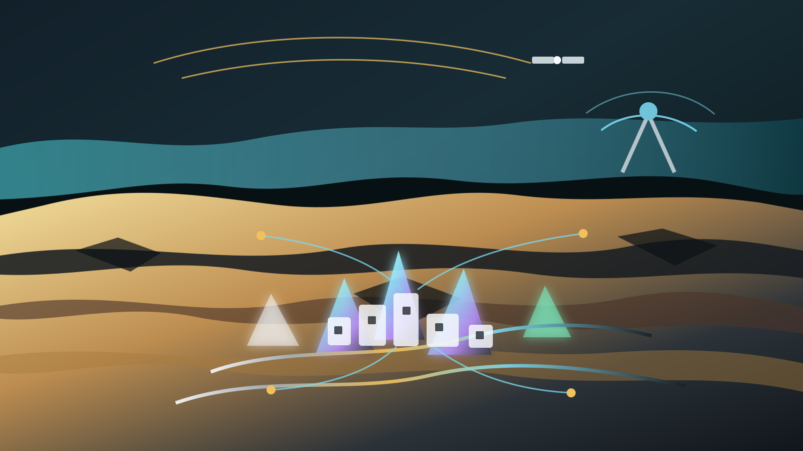

Cosmic Nexus
A Strange But True family project for blending sci-fi imagination with real history mapping, out-of-place objects, mythology, modern UAP disclosure, travel, films, simulations and grassroots governance.
Gateway
Six public rooms, one shared map.
Each page keeps a different part of the system readable: visitor onboarding, history mapping, governance simulation, film worldbuilding, repo connections and source boundaries.
01
Onboarding
Choose a role, learn the public/private boundary, and create an agent-readable contribution note.
02Atlas
Map out-of-place objects, ancient aeronautics, mythology, modern disclosure and blue-domain hypotheses.
03Governance
Use the Extra Chair method, P4A layers, legal memory and Web3 Sensorium ideas without losing consent.
04Films
Turn the Alien Necklace, CYOA prompts, worldbuilding festivals and reality-TV energy into a public story engine.
05Connections
Follow verified links to Mineral Moonshots, P4A, Travel Strategy, Legal Memory, AUKUS and GAJRA summit work.
06Sources
See which notes and repo-backed PDFs informed the first public version.
Why it exists
A place where the strange earns a method.
The point is not to make people believe more. The point is to make unusual material easier to sort. Some ideas belong in historical research, some in speculative film, some in travel strategy, some in legal memory, some in civic simulation, and some should stay in the hypothesis sandbox until they have better evidence.
Neighbouring repos
The first bridge cards.
These are live repo-backed neighbours that give Cosmic Nexus its first public pathways.

Mineral Moonshots
The moonshot atlas already has a Cosmic Nexus and Abyss Protocol brief. This standalone repo gives that thread more room.
Open the brief
P4A Web3 Sensorium
The simulation and grassroots governance layer: local-first twins, open debate, public-interest data and human review.
Open Sensorium
GAJRA Earth-Space-AI Summit
The peaceful space and civic AI summit doorway that connects care, community resilience, ISS questions and public support.
Open summit